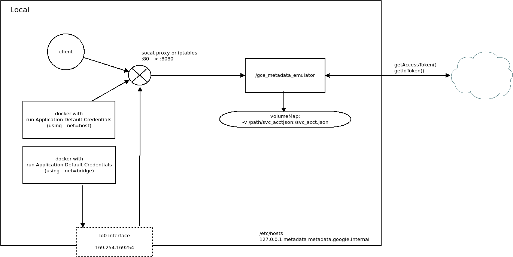
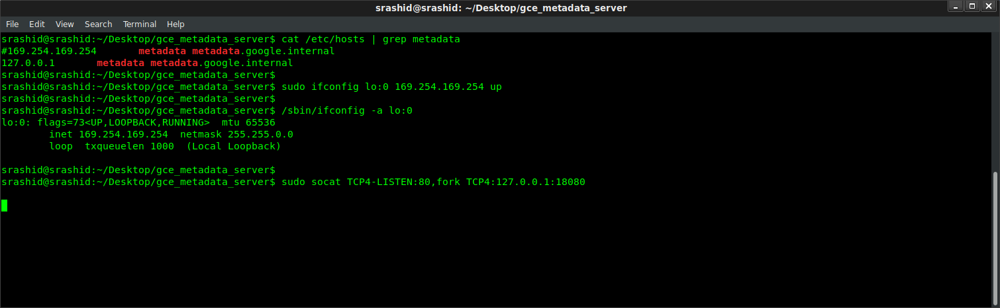
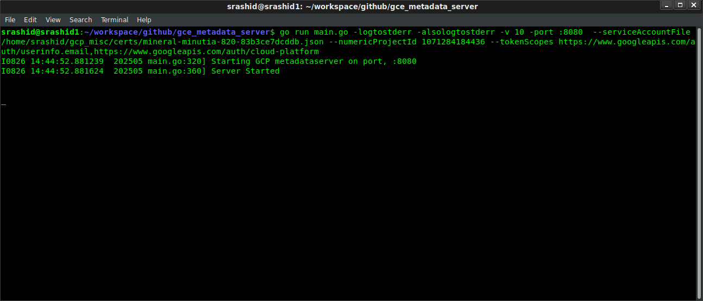
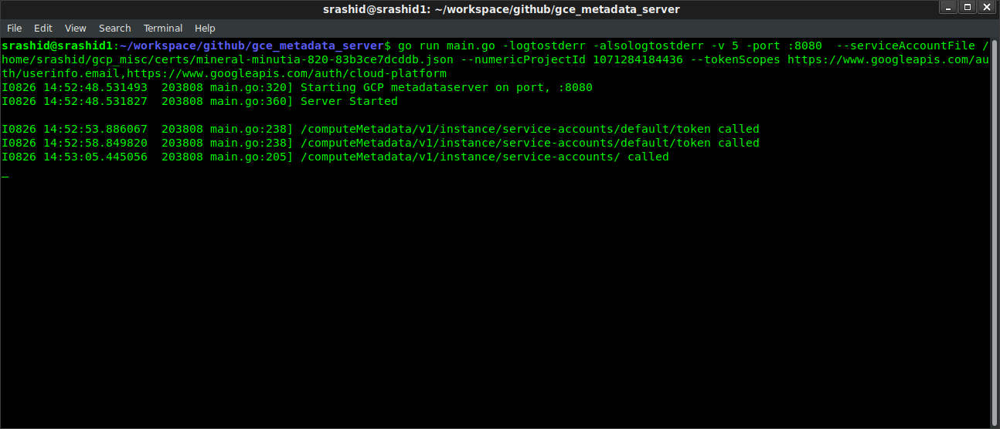

ARTICLES
GCE Metadata Server Emulator
This script acts as a GCE’s internal metadata server for local testing/emulation.
It returns a live access_token that can be used directly by Application Default Credentials transparently.
This is useful to test any script or code locally that my need to contact GCE’s metadata server for custom, user-defined variables or access_tokens.
Another usecase for this is to verify how Application Defaults will behave while running a local docker container. A local running docker container will not have access to GCE’s metadata server but by bridging your container to the emulator, you are basically allowing GCP API access directly from within a container on your local workstation (vs. running the code comprising the container directly on the workstation and relying on gcloud credentials (not metadata)).
For example, you can use ComputeCredentials on your laptop:
#!/usr/bin/python
import google.auth.compute_engine
import google.auth.transport.requests
creds = google.auth.compute_engine.Credentials()
request = google.auth.transport.requests.Request()
creds.refresh(request)
session = google.auth.transport.requests.AuthorizedSession(creds)
r = session.get('https://www.googleapis.com/userinfo/v2/me').json()
print str(r)
For more inforamtion on the request-response characteristics: * GCE Metadata Server
The script performs the following:
* returns the access_token provided by the serviceAccount JSON file you speify.
* returns Google issued OpendID token (id_token) for the Service Account using the audience you specify
* return custom key-value attributes
* Identity Token document
The endpoints that are exposed are:
r.Handle("/computeMetadata/v1/project/project-id")
r.Handle("/computeMetadata/v1/project/numeric-project-id")
r.Handle("/computeMetadata/v1/project/attributes/{key}")
r.Handle("/computeMetadata/v1/instance/service-accounts/")
r.Handle("/computeMetadata/v1/instance/service-accounts/{acct}/")
r.Handle("/computeMetadata/v1/instance/service-accounts/{acct}/{key}")
r.Handle("/")
You are free to expand on the endpoints surfaced here..pls feel free to file a PR!
Overall, the proxy works to emulate the link-local address 169.254.169.254 that is used by the metadata server. Once a route to that is established (via iptables or socat), you can run a simple http webserver that responds back with the request details.
- 
Usage
This script runs a basic webserver and responds back as the Google Compute Engine’s metadata server. A local webserver
runs on a non-privleged port (default: 8080) and uses a serviceAccountFile file or environment variables return an access_token
and optional live project user-defined metadata.
You can run the emulator either:
- directly on your laptop
- within a docker container running locally.
Running the metadata server directly
The following steps details how you can run the emulator on your laptop.
1. Reconfigure the /etc/hosts to resolve the metadata server
# /etc/hosts 127.0.0.1 metadata metadata.google.internal2. Create metadata IP alias
GCE’s metadata server’s IP address on GCE is a special link-local address: 169.254.169.254. Certain application default credential libraries for google cloud references the metadata server by IP address so we’re adding this in. The following steps creates an IP address alias for the local system.
sudo ifconfig lo:0 169.254.169.254 up
You can veirify the alias was created by checking ifconfig
/sbin/ifconfig -a
lo:0 Link encap:Local Loopback
inet addr:169.254.169.254 Mask:255.255.0.0
UP LOOPBACK RUNNING MTU:65536 Metric:1
(on windows)
netsh interface ipv4 add address "Loopback Pseudo-Interface 1" 169.254.169.254 255.255.0.0
- 3. Run socat
You need to install a utility to map port :80 traffic since REST calls to the metadata server are HTTP. The following usees socat:
sudo apt-get install socat
sudo socat TCP4-LISTEN:80,fork TCP4:127.0.0.1:8080
- 
Alternatively, you can create an OUTPUT iptables rule to intercept and redirect the metadata traffic.
iptables -t nat -A OUTPUT -p tcp -d 169.254.169.254 --dport 80 -j REDIRECT --to-port 8080
- 4. Downlaod JSON ServiceAccount file
Create a GCP Service Account JSON file
export GOOGLE_PROJECT_ID=`gcloud config get-value core/project`
export GOOGLE_NUMERIC_PROJECT_ID=`gcloud projects describe $GOOGLE_PROJECT_ID --format="value(projectNumber)"`
gcloud iam service-accounts create metadata-sa
gcloud iam service-accounts keys create metdata-sa.json --iam-account=metadata-sa-@$GOOGLE_PROJECT_ID.iam.gserviceaccount.com
You can assign IAM permissions now to the service accunt for whatever resources it may need to access
- 5. Run the metadata server
go run main.go -logtostderr \
-alsologtostderr -v 5 \
-port :8080 \
--serviceAccountFile /path/to/metadta-sa.json \
--numericProjectId $PROJECT_NUMBER \
--tokenScopes https://www.googleapis.com/auth/userinfo.email,https://www.googleapis.com/auth/cloud-platform
or via docker
```bash
mkdir certs/
cp metadata-sa.json certs
docker run \
-v `pwd`/certs/:/certs/ \
-p 8080:8080 \
-t salrashid123/gcemetadataserver \
-serviceAccountFile /certs/svc_account.json \
-logtostderr -alsologtostderr -v 5 \
-port :8080 \
-numericProjectId $PROJECT_NUMBER \
-tokenScopes https://www.googleapis.com/auth/userinfo.email,https://www.googleapis.com/auth/cloud-platform
Statup

6. Test access to the metadata server In a new window, run
curl -v -H 'Metadata-Flavor: Google' http://metadata.google.internal/computeMetadata/v1/instance/service-accounts/default/token
>
< HTTP/1.1 200 OK
< Content-Type: application/json
< Metadata-Flavor: Google
< Server: Metadata Server for VM
< X-Frame-Options: 0
< X-Xss-Protection: 0
< Date: Mon, 26 Aug 2019 21:50:09 GMT
< Content-Length: 190
<
{"access_token":"ya29.c.EltxByD8vfv2ACageADlorFHWd2ZUIgGdU-redacted","expires_in":3600,"token_type":"Bearer"}
curl -v -H 'Metadata-Flavor: Google' http://169.254.169.254/computeMetadata/v1/instance/service-accounts/default/token
< HTTP/1.1 200 OK
< Content-Type: application/json
< Metadata-Flavor: Google
< Server: Metadata Server for VM
< X-Frame-Options: 0
< X-Xss-Protection: 0
< Date: Mon, 26 Aug 2019 21:51:28 GMT
< Content-Length: 190
<
{"access_token":"ya29.c.EltxByD8vfv2ACageADlorFHWd2ZUIgGdU-redacted","expires_in":3521,"token_type":"Bearer"}srashid@srashid1:~$
- 
You can also use the python snippet using Application Default Credentials to test.
Run the metadata server with containers
Access the local emulator from containers
If you run an app inside a docker container that needs to access the metadata server, there are two options:
- use bridge networking
- use host networking
- create a custom network and run the metadata server in a container ((preferred).
Add bridge networking to the running Container (–net=bridge)
To use bridge networking, you need to first
- create the interface alias for 169.254.169.254 –> lo:0
- make sure ip_forward is enabled sudo sysctl -w net.ipv4.ip_forward=1
- run socat to forward 80–>18080
start the container and pass in the host files pointing to the local emulator’s ip address:
docker run -t --net=bridge --add-host metadata.google.internal:169.254.169.254 --add-host metadata:169.254.169.254 _your-image_
You may need to drop existing firewall rules and then restart the docker daemon to prevent conflicts or overrides.
Add host networking to the running Container (–net=host)
This will allow the container to ‘see’ the local interface on the laptop. The disadvantage is the host’s interface is the containers as well
docker run --net=host -t _your-image_
NOTE: using –net=host is only recommended for testing; For more information see:
Running as Kubernetes Serivce
You can run the emulator as a kubernetes service but you cannot bind the link local address 169.254.169.254 with a k8s service. see Kubernetes Services:
“The endpoint IPs must not be: loopback (127.0.0.0/8 for IPv4, ::1⁄128 for IPv6), or link-local (169.254.0.0/16 and 224.0.0.0/24 for IPv4, fe80::/64 for IPv6).”
While you can connect via k8s service name, certain google cloud libraries look for the metadata server by IP address or allow overrides (eg, google-auth-python)
https://kubernetes.io/docs/concepts/services-networking/service/#services-without-selectors
Using static environment variables
If you do not have access to certificate file or would like to specify static token values via env-var, the metadata server supports the following environment variables as substitutions. Once you set these environment variables, the service will not look for anything using the service Account JSON file (even if specified)
GOOGLE_PROJECT_ID = 'GOOGLE_PROJECT_ID'
GOOGLE_NUMERIC_PROJECT_ID = 'GOOGLE_NUMERIC_PROJECT_ID'
GOOGLE_ACCESS_TOKEN = 'GOOGLE_ACCESS_TOKEN'
GOOGLE_ACCOUNT_EMAIL = `GOOGLE_ACCOUNT_EMAIL`
for example,
docker run \
-p 8080:8080 \
-t salrashid123/gcemetadataserver \
-logtostderr -alsologtostderr -v 5 \
-e GOOGLE_ACCESS_TOKEN=some_static_token \
-e GOOGLE_NUMERIC_PROJECT_ID=12345 \
-e GOOGLE_PROJECT_ID=my_project \
-e GOOGLE_ACCOUNT_EMAIL=metadata-sa-@$GOOGLE_PROJECT_ID.iam.gserviceaccount.com gcemetadataserver \
-port :8080 \
-tokenScopes https://www.googleapis.com/auth/userinfo.email,https://www.googleapis.com/auth/cloud-platform
curl -v -H 'Metadata-Flavor: Google' http://metadata.google.internal/computeMetadata/v1/instance/service-accounts/default/token
some_static_token
Allowing all firewall policies
The following set of command resets all firewall policies to allow all. This is sometimes needed to allow clean socat or iptables. Only do this if you know iptable rules are blocking traffic..
#!/bin/sh
echo "Stopping firewall and allowing everyone..."
iptables -F
iptables -X
iptables -t nat -F
iptables -t nat -X
iptables -t mangle -F
iptables -t mangle -X
iptables -P INPUT ACCEPT
iptables -P FORWARD ACCEPT
iptables -P OUTPUT ACCEPT
Port mapping :80 –> :8080
Since GCE’s metadata server listens on http for :80, this script relies on utilities like ‘socat’ to redirect port traffic. socat has pretty basic connection handling so you’d be better with iptables, gunicorn. You are free to either run the script on port :80 directly (as root), or use a utilitity like iptables, HAProxy, nginx, etc to do this mapping.
The following example of an iptables route 80 -> 8080 on the local interface
sudo iptables -t nat -A OUTPUT -o lo -p tcp --dport 80 -j REDIRECT --to-port 8080
Extending the sample
You can extend this sample for any arbitrary metadta you are interested in emulating (eg, disks, hostname, etc). Simply add the routes to the webserver and handle the responses accordingly. It is recomended to view the request-response format directly on the metadata server to compare against.
TODO
- Directory Browsing
Instead of explictly setting routes, use the local filesystem to return the strucure for non-dynamic content or attributes. In this way, the metadata server just returns the directory and files that mimics the metadata server structure.
eg: create a directory structure similar to:
./static/
0.1/
computeMetadata/
v1beta1/
v1/
instance/
oslogin/
project/
r.Handle("/", checkMetadataHeaders(http.FileServer(http.Dir("./static"))))
Which currently returns HTML content as well asContent-Type: text/html; charset=utf-8, the metadata server new-line text as Content-Type: application/text
TODO: figure out how to return text payload similar to the metadata server
$ curl -H "Metadata-Flavor: Google" -v http://metadata.google.internal/
* Trying 169.254.169.254...
* TCP_NODELAY set
* Connected to metadata.google.internal (169.254.169.254) port 80 (#0)
> GET / HTTP/1.1
> Host: metadata.google.internal
> User-Agent: curl/7.52.1
> Accept: */*
> Metadata-Flavor: Google
>
< HTTP/1.1 200 OK
< Metadata-Flavor: Google
< Content-Type: application/text
< Date: Mon, 26 Aug 2019 17:08:17 GMT
< Server: Metadata Server for VM
< Content-Length: 22
< X-XSS-Protection: 0
< X-Frame-Options: SAMEORIGIN
<
0.1/
computeMetadata/
$ curl -H "Metadata-Flavor: Google" -s http://metadata.google.internal/computeMetadata/v1/instance
/computeMetadata/v1/instance/
$ curl -H "Metadata-Flavor: Google" -s http://metadata.google.internal/computeMetadata/v1/instance/
attributes/
cpu-platform
description
disks/
guest-attributes/
hostname
id
image
licenses/
machine-type
maintenance-event
name
network-interfaces/
preempted
remaining-cpu-time
scheduling/
service-accounts/
tags
virtual-clock/
zone
- Redirects
Metadata server currently redirects path from root to one with a /.
TODO: account for the redirect.
$ curl -H "Metadata-Flavor: Google" -v http://metadata.google.internal/computeMetadata/v1/instance
* Trying 169.254.169.254...
* TCP_NODELAY set
* Connected to metadata.google.internal (169.254.169.254) port 80 (#0)
> GET /computeMetadata/v1/instance HTTP/1.1
> Host: metadata.google.internal
> User-Agent: curl/7.52.1
> Accept: */*
> Metadata-Flavor: Google
>
< HTTP/1.1 301 Moved Permanently
< Metadata-Flavor: Google
< Location: http://metadata.google.internal/computeMetadata/v1/instance/
< Date: Mon, 26 Aug 2019 17:40:25 GMT
< Content-Type: text/html
< Server: Metadata Server for VM
< Content-Length: 30
< X-XSS-Protection: 0
< X-Frame-Options: SAMEORIGIN
<
/computeMetadata/v1/instance/